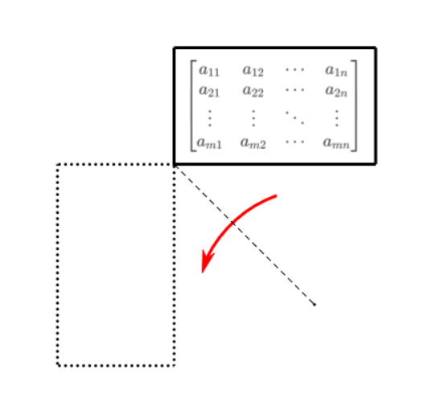

Time: 2022/09/07
Author: XrySamuel
Textbook: 大学数学——线性代数 上海交通大学数学系
矩阵：m 行 n 列长方形数表
记为
A=⎣⎡a11a21⋮am1a12a22⋮am2⋯⋯⋱⋯a1na2n⋮amn⎦⎤=(aij)m×n
其元素记为 aij
矩阵：只有一行（列）的矩阵
或称行（列）向量
零矩阵：元素全部为 0 的矩阵
记为
Om×n=⎣⎡00⋮000⋮0⋯⋯⋱⋯00⋮0⎦⎤
方阵：行数列数相同的矩阵
记为
A=⎣⎡a11a21⋮an1a12a22⋮an2⋯⋯⋱⋯a1na2n⋮ann⎦⎤=(aij)n×n
对角形矩阵：除了主对角元全部为 0 的方阵
记为
A=⎣⎡a110⋮00a22⋮0⋯⋯⋱⋯00⋮ann⎦⎤=diag{a11,a22,...,ann}
单位矩阵：对角元全是 1 的对角形矩阵
记为
I=⎣⎡10⋮001⋮0⋯⋯⋱⋯00⋮1⎦⎤
数量矩阵：对角元全是 a 的对角形矩阵
记为
aI=⎣⎡a0⋮00a⋮0⋯⋯⋱⋯00⋮a⎦⎤
上三角形矩阵：
⎣⎡a110⋮0a12a22⋮0⋯⋯⋱⋯a1na2n⋮ann⎦⎤
下三角形矩阵：
⎣⎡a11a21⋮an10a22⋮an2⋯⋯⋱⋯00⋮ann⎦⎤
对称矩阵
A=⎣⎡a11a21⋮an1a12a22⋮an2⋯⋯⋱⋯a1na2n⋮ann⎦⎤
其中 aij=aji (i,j=1,2,...,n)
反对称矩阵
A=⎣⎡a11a21⋮an1a12a22⋮an2⋯⋯⋱⋯a1na2n⋮ann⎦⎤
其中 aij=−aji (i,j=1,2,...,n)
A=(aij)m×n=⎣⎡a11a21⋮am1a12a22⋮am2⋯⋯⋱⋯a1na2n⋮amn⎦⎤B=(bij)s×t=⎣⎡b11b21⋮bs1b12b22⋮bs2⋯⋯⋱⋯b1tb2t⋮bst⎦⎤
如果 m=s，n=t，aij=bij，则矩阵相等
设 A=(aij)m×n，B=(bij)m×n
矩阵加法：对应位置相加，A+B=(aij+bij)m×n
负矩阵：−A=(−aij)m×n
矩阵减法：A−B=A+(−B)
设 A=(aij)m×n，B=(bij)m×n，C=(cij)m×n，则，
- 交换律：A+B=B+A
- 加法结合律：(A+B)+C=A+(B+C)
- 加法单位元：A+O=O+A
- 加法逆元：A+(−A)=O
设 A=(aij)m×n，c 是一个数
矩阵的数乘：cA=(caij)m×n
设 A=(aij)m×n，k 和 l 是数
- lA=A
- k(lA)=(kl)A
- (k+l)A=kA+lA
- k(A+B)=kA+kB

设 A=(aij)m×n
矩阵的转置：AT=(aij′)n×m，aij=aji′
设 A=(aij)m×n，B=(bij)m×n，k 是一个数
- (AT)T=A
- (A+B)T=AT+BT
- (kA)T=k(AT)
设 A=(aij)m×p，B=(bij)p×n
矩阵乘法：两个矩阵相乘后的 i 行 j 列的元素是前一个矩阵的行与后一个矩阵的列对应项相乘再求和，AB=(cij)m×n，cij=k=1∑paikbkj
⎣⎡⋆⋆⋆⋆⋆⋆⋆⋆⋆⋆⋆⋆⋆⋆⋆⋆⋆⋆⋆⋆⎦⎤⎣⎡⋆⋆⋆⋆⋆⋆⋆⋆⋆⋆⋆⋆⋆⋆⋆⎦⎤=⎣⎡⋆⋆⋆⋆⋆⋆⋆⋆⋆⋆⋆⋆⎦⎤
设下列式子有定义
- 乘法结合律：(AB)C=A(BC)
- k(AB)=(kA)B=A(kB)
- 乘法右分配律：(A+B)C=AC+BC
- 乘法左分配律：C(A+B)=CA+CB
- k(A+B)=kA+kB
- AE=EA=A
- AO=OA=O
- (AB)T=BTAT
注
矩阵乘法一般不满足交换律，即 AB=BA 一般不成立
矩阵乘法一般不满足消去律，即 AB=AC 以及 BA=CA 均推不出 B=C
AB=O 推不出 A=O 或 B=O
设 A=(aij)n×n，x=(xi1)n×1
若 A 是反对称矩阵，则 ∀x∈Rn，有 xTAx=0
证明：xTAx=x1i′aijxj1=aijxi1xj1=aijxi1xj1/2+ajixi1xj1/2=(aij+aji)xi1xj1/2=0（省略求和符号，在同一项中对重复指标求和）
设 A=(aij)n×n
∀B=(bij)n×n，AB=BA 的充要条件是 A 是数量矩阵
证明：充分性是显然的，下证必要性
令 B=En(p,q)，En(p,q) 表示只有第 p 行第 q 列的那个元素是 1，其他位置上的元素都是 0 的 n 阶方阵
由 AEn(p,q)=En(p,q)A
得 aip=0，aqj=0，i=p，j=q，app=aqq
而 p 和 q 是任给的，易得 A 是数量矩阵
可交换
若 AB=BA，则称 A，B 可交换
设 A=(aij)n×n，m∈N
方阵的幂：Am=Am−1A，A1=A
一般规定 A0=E
设 A=(aij)n×n，m,n∈N
- AmAn=Am+n
- (Am)n=Amn
注
由于矩阵乘法一般不满足交换律
所以一下式子都不一定成立：
- (AB)m=AmBm
- (A+B)2=A2+2AB+B2
- (A−B)(A+B)=A2−B2
正确的处理方式应该是：
- (AB)m=A(BA)m−1B
- (A+B)2=A2+AB+BA+B2
- (A−B)(A+B)=A2+AB−BA−B2
设 A=(aij)n×n，m∈N，E 为 n 阶单位矩阵
(A+E)m=Am+Cm1Am−1+⋯+CmmE
设 A=(aij)n×n，m∈N，E 为 n 阶单位矩阵
方阵 A 的多项式： f(A)=a0Am+a1Am−1+⋯+amE
例 1 设 A=(1,2,3)，B=(1,21,31)，C=ATB，求 Cn（n 是自然数）
证明思路：运用结论 (AB)m=A(BA)m−1B
例 2 设矩阵
A=⎣⎡λ001λ001λ⎦⎤
求 A2017
证明思路：将 A 分拆为 λE+B
注
上题中的 B 具有特殊的性质：B3=O
幂零矩阵：设 A=(aij)n×n，若 ∃m∈N，使得 Am=0 则称 A 为幂零矩阵
移位矩阵：形如
⎣⎡1⋱1⎦⎤
移位矩阵必为幂零矩阵
上题中的 B 就是一个移位矩阵
例 3 设矩阵
A=⎣⎡1−21−12−12−42⎦⎤
试求 An（n 是自然数）
证明思路：参考例 1
设 A=(aij)n×n
矩阵的迹：tr(A)=i=1∑naii
设 A=(aij)n×n，B=(bij)n×n，k 是一个数
- tr(A+B)=tr(A)+tr(B)
- tr(kA)=ktr(A)
- tr(AB)=tr(BA)
- tr(AT)=tr(A)
设 A 是 n 阶实方阵，试证明：
- 若 tr(AAT)=0，则 A=O
- 若 A2=AAT，则 A 为对称矩阵
证明：（1）由条件可得 j=1∑nxijxji′=0
即 j=1∑nxij2=0，得 xij=0
（2）由条件可得 AA=AAT，两边取转置，得 ATAT=ATA
故 AAT+ATA−AA−ATAT=O
即 (A−AT)(AT−A)=O
即 (A−AT)(A−AT)T=O
故 tr((A−AT)(A−AT)T)=0，由（1）可得 A=AT，即 A 为对称矩阵